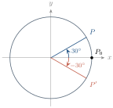
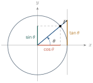
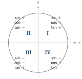
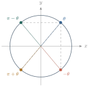
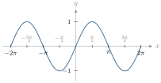
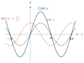
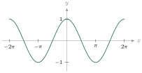
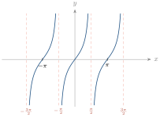
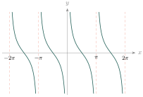

- បំប្លែងមុំពីដឺក្រេទៅរ៉ាដ្យង់ និងពីរ៉ាដ្យង់ទៅដឺក្រេ
- ប្រើលក្ខណៈមុំផ្គុំក្នុងការគណនាអនុគមន៍ត្រីកោណមាត្រ
- សង់ក្រាបនៃអនុគមន៍ត្រីកោណមាត្រ ។
1. រង្វាស់មុំ
1.1. មុំមានទិសដៅ
ក្នុងរង្វង់ត្រីកោណមាត្រ វ៉ិចទ័រ \(\displaystyle \vec{OP_0}\) (នៅលើផ្នែកវិជ្ជមាននៃអ័ក្ស \(\displaystyle Ox\)) ហៅថាវ៉ិចទ័រគល់ ហើយ \(\displaystyle \vec{OP}\) ជាវ៉ិចទ័រចល័តជុំវិញ \(\displaystyle O\) ហៅថាវ៉ិចទ័រចុង ។

- \(\displaystyle \vec{OP}\) វិលច្រាសទិសទ្រនិចនាឡិកា ៖ មុំវិជ្ជមាន ឧទាហរណ៍ \(\displaystyle (\vec{OP_0},\vec{OP}) = 30^\circ\) ។
- \(\displaystyle \vec{OP}\) វិលស្របទិសទ្រនិចនាឡិកា ៖ មុំអវិជ្ជមាន ឧទាហរណ៍ \(\displaystyle (\vec{OP_0},\vec{OP}) = -30^\circ\) ។
- វិលមួយជុំពេញបាន \(\displaystyle 360^\circ\) ហើយរង្វាស់កើនជា \(\displaystyle 2, 3, \dots\) ដង តាមចំនួនជុំ ។
បើ \(\displaystyle \alpha\) ជាមុំកំណត់ដោយ \(\displaystyle \vec{OP_0}\) និង \(\displaystyle \vec{OP}\) នោះមុំ \(\displaystyle \alpha + k\cdot360^\circ\) (\(\displaystyle k \in \mathbb{Z}\)) ក៏កំណត់ដោយវ៉ិចទ័រទាំងពីរនេះដែរ ។
\(\displaystyle \vec{OP}\) វិលបាន \(\displaystyle 120^\circ\) រួចវិលបាន \(\displaystyle -155^\circ\) ទៀត ។ រកមុំ \(\displaystyle (\vec{OP_0},\vec{OP})\) ។ ចម្លើយ \(\displaystyle 120^\circ + (-155^\circ) = -35^\circ\) ។
គណនា \(\displaystyle \alpha = 45^\circ + k\cdot360^\circ\) ចំពោះ \(\displaystyle k = 1\), \(\displaystyle k = -1\) ។ ចម្លើយ \(\displaystyle 405^\circ\) និង \(\displaystyle -315^\circ\) ។
- \(\displaystyle \vec{OP}\) វិលបាន \(\displaystyle 70^\circ\) តាមទិសអវិជ្ជមាន រួចវិលបាន \(\displaystyle 150^\circ\) តាមទិសវិជ្ជមាន ។ រក \(\displaystyle (\vec{OP_0},\vec{OP})\) ។
- គណនា \(\displaystyle \alpha = -270^\circ + k\cdot360^\circ\) ចំពោះ \(\displaystyle k = 2\), \(\displaystyle k = -3\) ។
មើលចម្លើយ
(១) \(\displaystyle 80^\circ\) (២) \(\displaystyle 450^\circ\) និង \(\displaystyle -1350^\circ\) ។
1.2. រង្វាស់មុំគិតជារ៉ាដ្យង់
និយមន័យ \(\displaystyle 1\) រ៉ាដ្យង់ (\(\displaystyle 1\text{ rd}\)) គឺជារង្វាស់មុំផ្ចិតដែលស្កាត់ធ្នូមួយមានប្រវែងស្មើកាំរង្វង់ ។ ដោយបរិមាត្រ \(\displaystyle 2\pi r\) ត្រូវនឹងមុំ \(\displaystyle 360^\circ = 2\pi\) rd ។
\(\displaystyle 1\text{ rd} = \dfrac{180^\circ}{\pi} \approx 57^\circ\) និង \(\displaystyle 1^\circ = \dfrac{\pi}{180}\text{ rd} \approx 0.017\text{ rd}\) ។ ប្រវែងធ្នូ \(\displaystyle = \alpha\cdot r\) (\(\displaystyle \alpha\) គិតជារ៉ាដ្យង់) ។
ឧទាហរណ៍ : រង្វង់កាំ \(\displaystyle 5\text{ cm}\) មុំផ្ចិត \(\displaystyle 30^\circ = \dfrac{\pi}{6}\approx0.52\) rd ។ ប្រវែងធ្នូ \(\displaystyle = 0.52 \times 5 \approx 2.6\text{ cm}\) ។
ប្តូរ \(\displaystyle 30^\circ, 45^\circ, 150^\circ\) ជារ៉ាដ្យង់ និង \(\displaystyle \dfrac\pi5, \dfrac{2\pi}{3}, 3\pi\) ជាដឺក្រេ ។
\(\displaystyle \dfrac{\pi}{6},\ \dfrac{\pi}{4},\ \dfrac{5\pi}{6}\) និង \(\displaystyle 36^\circ,\ 120^\circ,\ 540^\circ\) ។
ប្តូរជាដឺក្រេ \(\displaystyle \dfrac{4\pi}{3}, -\dfrac{4\pi}{3}, \dfrac{7\pi}{4}, -\dfrac{7\pi}{2}\) ។ ចម្លើយ \(\displaystyle 240^\circ, -240^\circ, 315^\circ, -630^\circ\) ។
2. អនុគមន៍ត្រីកោណមាត្រ
2.1. ស៊ីនុស កូស៊ីនុស តង់សង់ និងកូតង់សង់
ក្នុងរង្វង់ត្រីកោណមាត្រផ្ចិត \(\displaystyle O\) កាំ \(\displaystyle r\) ចំណុច \(\displaystyle P(x,y)\) ដែល \(\displaystyle (\vec{OA},\vec{OP}) = \theta\) ៖

រង្វង់ដែលមានផ្ចិត \(\displaystyle O\) កាំ \(\displaystyle 1\) ហៅថារង្វង់ឯកតា ។ ឧទាហរណ៍ \(\displaystyle \sin\dfrac\pi2 = 1\), \(\displaystyle \cos\dfrac\pi2 = 0\), \(\displaystyle \cot\dfrac\pi2 = 0\) ហើយ \(\displaystyle \tan\dfrac\pi2\) មិនកំណត់ ។ ចំពោះ \(\displaystyle \dfrac\pi6\) ៖ \(\displaystyle \sin = \dfrac12\), \(\displaystyle \cos = \dfrac{\sqrt3}{2}\), \(\displaystyle \tan = \dfrac{\sqrt3}{3}\), \(\displaystyle \cot = \sqrt3\) ។
តារាងតម្លៃមុំពិសេស
| មុំ | \(\displaystyle 0\) | \(\displaystyle \frac\pi6\) | \(\displaystyle \frac\pi4\) | \(\displaystyle \frac\pi3\) | \(\displaystyle \frac\pi2\) | \(\displaystyle \frac{2\pi}3\) | \(\displaystyle \frac{3\pi}4\) | \(\displaystyle \frac{5\pi}6\) |
| \(\displaystyle \sin\) | \(\displaystyle 0\) | \(\displaystyle \frac12\) | \(\displaystyle \frac{\sqrt2}2\) | \(\displaystyle \frac{\sqrt3}2\) | \(\displaystyle 1\) | \(\displaystyle \frac{\sqrt3}2\) | \(\displaystyle \frac{\sqrt2}2\) | \(\displaystyle \frac12\) |
| \(\displaystyle \cos\) | \(\displaystyle 1\) | \(\displaystyle \frac{\sqrt3}2\) | \(\displaystyle \frac{\sqrt2}2\) | \(\displaystyle \frac12\) | \(\displaystyle 0\) | \(\displaystyle -\frac12\) | \(\displaystyle -\frac{\sqrt2}2\) | \(\displaystyle -\frac{\sqrt3}2\) |
| \(\displaystyle \tan\) | \(\displaystyle 0\) | \(\displaystyle \frac{\sqrt3}3\) | \(\displaystyle 1\) | \(\displaystyle \sqrt3\) | \(\displaystyle -\) | \(\displaystyle -\sqrt3\) | \(\displaystyle -1\) | \(\displaystyle -\frac{\sqrt3}3\) |
| \(\displaystyle \cot\) | \(\displaystyle -\) | \(\displaystyle \sqrt3\) | \(\displaystyle 1\) | \(\displaystyle \frac{\sqrt3}3\) | \(\displaystyle 0\) | \(\displaystyle -\frac{\sqrt3}3\) | \(\displaystyle -1\) | \(\displaystyle -\sqrt3\) |
| មុំ | \(\displaystyle \pi\) | \(\displaystyle \frac{7\pi}6\) | \(\displaystyle \frac{5\pi}4\) | \(\displaystyle \frac{4\pi}3\) | \(\displaystyle \frac{3\pi}2\) | \(\displaystyle \frac{5\pi}3\) | \(\displaystyle \frac{7\pi}4\) |
| \(\displaystyle \sin\) | \(\displaystyle 0\) | \(\displaystyle -\frac12\) | \(\displaystyle -\frac{\sqrt2}2\) | \(\displaystyle -\frac{\sqrt3}2\) | \(\displaystyle -1\) | \(\displaystyle -\frac{\sqrt3}2\) | \(\displaystyle -\frac{\sqrt2}2\) |
| \(\displaystyle \cos\) | \(\displaystyle -1\) | \(\displaystyle -\frac{\sqrt3}2\) | \(\displaystyle -\frac{\sqrt2}2\) | \(\displaystyle -\frac12\) | \(\displaystyle 0\) | \(\displaystyle \frac12\) | \(\displaystyle \frac{\sqrt2}2\) |
| \(\displaystyle \tan\) | \(\displaystyle 0\) | \(\displaystyle \frac{\sqrt3}3\) | \(\displaystyle 1\) | \(\displaystyle \sqrt3\) | \(\displaystyle -\) | \(\displaystyle -\sqrt3\) | \(\displaystyle -1\) |
| \(\displaystyle \cot\) | \(\displaystyle -\) | \(\displaystyle \sqrt3\) | \(\displaystyle 1\) | \(\displaystyle \frac{\sqrt3}3\) | \(\displaystyle 0\) | \(\displaystyle -\frac{\sqrt3}3\) | \(\displaystyle -1\) |
(ចំពោះ \(\displaystyle \dfrac{11\pi}{6}\) ៖ \(\displaystyle \sin = -\dfrac12\), \(\displaystyle \cos = \dfrac{\sqrt3}{2}\), \(\displaystyle \tan = -\dfrac{\sqrt3}3\), \(\displaystyle \cot = -\sqrt3\) ។)
គណនា ក. \(\displaystyle 2\sin\dfrac\pi3 + 4\cos\dfrac\pi6 - 3\tan\dfrac\pi3 + 4\cot\dfrac\pi4\) ខ. \(\displaystyle \dfrac{5 - 4\tan^2 45^\circ + \cot^2 60^\circ}{2\cos^2 60^\circ - 2\sin^3 90^\circ + 4\tan 45^\circ}\) ។
- ក. \(\displaystyle \sqrt3 + 2\sqrt3 - 3\sqrt3 + 4 = 4\)
- ខ. \(\displaystyle \dfrac{5 - 4 + \frac13}{\frac12 - 2 + 4} = \dfrac{4/3}{5/2} = \dfrac{8}{15}\)
គណនា ក. \(\displaystyle 2\sin^2\dfrac\pi4 - 3\tan^2\dfrac\pi6 + 2\cos^2\dfrac\pi2 + 3\cot^2\dfrac\pi4\) ខ. \(\displaystyle \sin(-135^\circ) + \sin\dfrac{4\pi}{3} + \tan\left(-\dfrac{5\pi}{4}\right)\) ។
មើលចម្លើយ
ក. \(\displaystyle 3\) ខ. \(\displaystyle \dfrac{-\sqrt3 - \sqrt2 - 2}{2}\) ។
2.2. សញ្ញានៃអនុគមន៍ត្រីកោណមាត្រ

| កាដ្រង់ | I | II | III | IV |
| \(\displaystyle \sin\alpha\) | \(\displaystyle +\) | \(\displaystyle +\) | \(\displaystyle -\) | \(\displaystyle -\) |
| \(\displaystyle \cos\alpha\) | \(\displaystyle +\) | \(\displaystyle -\) | \(\displaystyle -\) | \(\displaystyle +\) |
| \(\displaystyle \tan\alpha\) | \(\displaystyle +\) | \(\displaystyle -\) | \(\displaystyle +\) | \(\displaystyle -\) |
| \(\displaystyle \cot\alpha\) | \(\displaystyle +\) | \(\displaystyle -\) | \(\displaystyle +\) | \(\displaystyle -\) |
មុំ \(\displaystyle x\) នៅកាដ្រង់ណា ដែល \(\displaystyle \sin x < 0\) និង \(\displaystyle \cos x < 0\) ? ចម្លើយ កាដ្រង់ III ។
- កាដ្រង់ណាដែលមាន \(\displaystyle \cos x > 0\) និង \(\displaystyle \tan x > 0\) ?
- ក. កាដ្រង់ណាដែល \(\displaystyle \tan x\) និង \(\displaystyle \cot x\) មានសញ្ញាដូចគ្នា ? ខ. រក \(\displaystyle \cos\theta\), \(\displaystyle \tan\theta\) បើ \(\displaystyle \sin\theta = -\frac35\) និង \(\displaystyle \theta\) នៅកាដ្រង់ III ។
មើលចម្លើយ
(១) កាដ្រង់ I (២) ក. គ្រប់កាដ្រង់ ខ. \(\displaystyle \cos\theta = -\dfrac45\), \(\displaystyle \tan\theta = \dfrac34\) ។
3. លក្ខណៈនៃអនុគមន៍ត្រីកោណមាត្រ
3.1. ទំនាក់ទំនងសំខាន់ៗ
តាមទ្រឹស្តីបទពីតាគ័រក្នុងរង្វង់ឯកតា ៖
ឧទាហរណ៍ : \(\displaystyle \sin\theta = \dfrac{8}{17}\) នៅកាដ្រង់ I ។ \(\displaystyle \cos\theta = \sqrt{1 - \frac{64}{289}} = \dfrac{15}{17}\), \(\displaystyle \tan\theta = \dfrac{8}{15}\), \(\displaystyle \cot\theta = \dfrac{15}{8}\) ។
គណនា \(\displaystyle \dfrac{5\sin\alpha + 7\cos\alpha}{6\cos\alpha - 3\sin\alpha}\) បើ \(\displaystyle \tan\alpha = \dfrac{4}{15}\) ។
ចែកភាគយកនិងភាគបែងនឹង \(\displaystyle \cos\alpha\) ៖ \(\displaystyle \dfrac{5\tan\alpha + 7}{6 - 3\tan\alpha} = \dfrac{\frac43 + 7}{6 - \frac45} = \dfrac{125}{78}\) ។
- គណនា \(\displaystyle \cos\alpha, \tan\alpha, \cot\alpha\) បើ \(\displaystyle \sin\alpha = -\frac23\) និង \(\displaystyle \frac{3\pi}{2} < \alpha < 2\pi\) ។
- គណនា \(\displaystyle \dfrac{\cot\alpha + \tan\alpha}{\cot\alpha - \tan\alpha}\) បើ \(\displaystyle \sin\alpha = \frac35\) និង \(\displaystyle 0 < \alpha < \frac\pi2\) ។
មើលចម្លើយ
(១) \(\displaystyle \cos\alpha = \dfrac{\sqrt5}{3}\), \(\displaystyle \tan\alpha = -\dfrac{2\sqrt5}{5}\), \(\displaystyle \cot\alpha = -\dfrac{\sqrt5}{2}\) (២) \(\displaystyle \dfrac{25}{7}\) ។
3.2. មុំ \(\displaystyle \theta\) និង \(\displaystyle \theta + 2k\pi\)
ឧទាហរណ៍ : \(\displaystyle \sin\dfrac{9\pi}{2} = \sin\left(\dfrac\pi2 + 4\pi\right) = 1\) និង \(\displaystyle \cos\left(-\dfrac{17\pi}{3}\right) = \cos\left(\dfrac\pi3 - 6\pi\right) = \dfrac12\) ។
គណនា \(\displaystyle \cos\dfrac{65\pi}{4}\) និង \(\displaystyle \sin\left(-\dfrac{39\pi}{4}\right)\) ។ ដំណោះស្រាយ \(\displaystyle \dfrac{65\pi}4 = 16\pi + \dfrac\pi4\) ឱ្យ \(\displaystyle \dfrac{\sqrt2}{2}\) ហើយ \(\displaystyle -\dfrac{39\pi}4 = \dfrac\pi4 - 10\pi\) ឱ្យ \(\displaystyle \dfrac{\sqrt2}2\) ។
គណនា \(\displaystyle \sin6\pi\), \(\displaystyle \cos\left(-\dfrac{23\pi}6\right)\), \(\displaystyle \tan\dfrac{27\pi}4\), \(\displaystyle \sin\dfrac{11\pi}3\) ។ ចម្លើយ \(\displaystyle 0,\ \dfrac{\sqrt3}2,\ -1,\ -\dfrac{\sqrt3}2\) ។
3.3. មុំផ្គុំ

រូបមន្តមុំផ្គុំ
ឧទាហរណ៍ : \(\displaystyle \sin60^\circ = \cos30^\circ = \dfrac{\sqrt3}2\) ; \(\displaystyle \sin135^\circ = \sin45^\circ = \dfrac{\sqrt2}2\) ; \(\displaystyle \sin210^\circ = -\sin30^\circ = -\dfrac12\) ; \(\displaystyle \tan\dfrac{5\pi}6 = -\cot\dfrac\pi3 = -\dfrac{\sqrt3}3\) ។
គណនា
\(\displaystyle A = \cos\theta + \cos\theta - \cos\theta - \cos\theta = 0\) ហើយ \(\displaystyle B = \dfrac12 - \dfrac{\sqrt2}2 - \dfrac12 = -\dfrac{\sqrt2}2\) ។
គណនា \(\displaystyle \dfrac{\cos(-288^\circ)\cot72^\circ}{\tan(-162^\circ)\sin108^\circ} - \tan18^\circ\) ។ ដំណោះស្រាយ \(\displaystyle \cos72^\circ = \sin18^\circ\), \(\displaystyle \cot72^\circ = \tan18^\circ\), \(\displaystyle \tan(-162^\circ) = \tan18^\circ\), \(\displaystyle \sin108^\circ = \cos18^\circ\) ។ ដូច្នេះ \(\displaystyle \dfrac{\sin18^\circ}{\cos18^\circ} - \tan18^\circ = 0\) ។
- ស្គាល់ \(\displaystyle \sin47^\circ = 0.6820\) ។ គណនា \(\displaystyle \cos43^\circ\) ។
- គណនា \(\displaystyle A = \sin(-x) + \sin(\pi-x) + \cos(\pi-x) + \sin(\frac\pi2-x)\), \(\displaystyle B = \sin(\frac{5\pi}2-x) + \cos(3\pi-x)\), \(\displaystyle C = \tan\frac{5\pi}6 + \cot\frac{7\pi}4 + \frac1{\tan\frac\pi3}\) ។
- គណនា \(\displaystyle \sin870^\circ\), \(\displaystyle \cos(-135^\circ)\), \(\displaystyle \tan765^\circ\), \(\displaystyle \cot\frac{25\pi}4\) ។
- គណនា \(\displaystyle \dfrac{(\cot44^\circ + \tan226^\circ)\cos406^\circ}{\cos316^\circ} - \cot72^\circ\cot18^\circ\) ។
មើលចម្លើយ
(១) \(\displaystyle 0.6820\) (២) \(\displaystyle A = 0\), \(\displaystyle B = 0\), \(\displaystyle C = -1\) (៣) \(\displaystyle \dfrac12,\ -\dfrac{\sqrt2}2,\ 1,\ 1\) (៤) \(\displaystyle 1\) ។
4. ការសិក្សាអនុគមន៍ត្រីកោណមាត្រ
ដើម្បីសិក្សាអនុគមន៍ត្រីកោណមាត្រ គេរកដែនកំណត់ ខួប ភាពគូសេស ទិសដៅអថេរភាព និងក្រាប ។
4.1. ដែនកំណត់
\(\displaystyle \sin x\) និង \(\displaystyle \cos x\) កំណត់លើ \(\displaystyle \mathbb{R}\) ។ \(\displaystyle \tan x\) កំណត់កាលណា \(\displaystyle \cos x \ne 0\) គឺ \(\displaystyle D = \mathbb{R}\setminus\left\{\dfrac\pi2 + k\pi\right\}\) ។ \(\displaystyle \cot x\) កំណត់កាលណា \(\displaystyle \sin x \ne 0\) គឺ \(\displaystyle D = \mathbb{R}\setminus\{k\pi\}\) ។
ឧទាហរណ៍ : \(\displaystyle y = \dfrac{4}{\cos x}\) កំណត់កាលណា \(\displaystyle x \ne \dfrac\pi2 + k\pi\) ; \(\displaystyle y = \tan(x-1)\) កំណត់កាលណា \(\displaystyle x \ne 1 + \dfrac\pi2 + k\pi\) ។
4.2. ខួបនៃអនុគមន៍
\(\displaystyle f\) មានខួប \(\displaystyle p\) កាលណា \(\displaystyle p\) ជាចំនួនវិជ្ជមានតូចបំផុត ដែល \(\displaystyle f(x+p) = f(x)\) គ្រប់ \(\displaystyle x \in D\) ។
\(\displaystyle y = \sin ax\) និង \(\displaystyle y = \cos ax\) មានខួប \(\displaystyle p = \dfrac{2\pi}{|a|}\) \(\displaystyle y = \tan ax\) និង \(\displaystyle y = \cot ax\) មានខួប \(\displaystyle p = \dfrac{\pi}{|a|}\)
ឧទាហរណ៍ : \(\displaystyle y = \sin\frac12x\) មានខួប \(\displaystyle 4\pi\) ; \(\displaystyle y = \cos(-3x)\) មានខួប \(\displaystyle \frac{2\pi}3\) ; \(\displaystyle y = 3\tan\frac12x\) មានខួប \(\displaystyle 2\pi\) ; \(\displaystyle y = \cot5x\) មានខួប \(\displaystyle \frac\pi5\) ។
4.3. ភាពគូនិងភាពសេស
\(\displaystyle f\) គូ កាលណា \(\displaystyle f(-x) = f(x)\) ; \(\displaystyle f\) សេស កាលណា \(\displaystyle f(-x) = -f(x)\) (គ្រប់ \(\displaystyle x \in D\) ហើយ \(\displaystyle -x \in D\)) ។ ក្រាបនៃអនុគមន៍សេសមានគល់ជាផ្ចិតឆ្លុះ ហើយក្រាបនៃអនុគមន៍គូមានអ័ក្សអរដោនេជាអ័ក្សឆ្លុះ ។
ឧទាហរណ៍ : \(\displaystyle y = x - \sin x\) ជាអនុគមន៍សេស ; \(\displaystyle y = \tan x\cot^3x\) ជាអនុគមន៍គូ (ដែនកំណត់ \(\displaystyle \mathbb{R}\setminus\{\frac{k\pi}2\}\)) ។
4.4. ក្រាបនៃ \(\displaystyle y = \sin x\) (ស៊ីនុសសូអ៊ីត)
ខួប \(\displaystyle 2\pi\) ជាអនុគមន៍សេស ។ សិក្សាលើ \(\displaystyle [0,\pi]\) ៖ \(\displaystyle x\) កើនពី \(\displaystyle 0\) ទៅ \(\displaystyle \frac\pi2\) នោះ \(\displaystyle \sin x\) កើនពី \(\displaystyle 0\) ទៅ \(\displaystyle 1\) រួចចុះពី \(\displaystyle 1\) ទៅ \(\displaystyle 0\) ពេល \(\displaystyle x\) ពី \(\displaystyle \frac\pi2\) ទៅ \(\displaystyle \pi\) ។

ឧទាហរណ៍ : \(\displaystyle y = 2\sin x\) លើ \(\displaystyle [0,2\pi]\) ៖
| \(\displaystyle x\) | \(\displaystyle 0\) | \(\displaystyle \frac\pi2\) | \(\displaystyle \pi\) | \(\displaystyle \frac{3\pi}2\) | \(\displaystyle 2\pi\) |
| \(\displaystyle 2\sin x\) | \(\displaystyle 0\) | \(\displaystyle 2\) | \(\displaystyle 0\) | \(\displaystyle -2\) | \(\displaystyle 0\) |

ក. សិក្សាអថេរភាព និងសង់ក្រាប \(\displaystyle y = \sin2x\) ខ. សង់ក្រាប \(\displaystyle y = \sin\left(x - \frac\pi3\right)\) ។
4.5. ក្រាបនៃ \(\displaystyle y = \cos x\)
ខួប \(\displaystyle 2\pi\) ជាអនុគមន៍គូ ។ លើ \(\displaystyle [0,\pi]\) ៖ \(\displaystyle \cos x\) ចុះពី \(\displaystyle 1\) ទៅ \(\displaystyle 0\) រួចទៅ \(\displaystyle -1\) ។

ឧទាហរណ៍ : \(\displaystyle y = 2\cos x\) ជាអនុគមន៍គូ ខួប \(\displaystyle 2\pi\) អតិបរមា \(\displaystyle 2\) ត្រង់ \(\displaystyle x = 0\) ។ ក្រាប \(\displaystyle y = \cos(x - \frac\pi2)\) បានដោយរំកិលក្រាប \(\displaystyle y = \cos x\) ទៅស្តាំ \(\displaystyle \frac\pi2\) ។
សិក្សាអថេរភាព និងសង់ក្រាប \(\displaystyle y = \cos2x\) និង \(\displaystyle y = \cos\left(x - \frac\pi6\right)\) ។
4.6. ក្រាបនៃ \(\displaystyle y = \tan x\)
ដែនកំណត់ \(\displaystyle \mathbb{R}\setminus\{\frac\pi2 + k\pi\}\) ខួប \(\displaystyle \pi\) ជាអនុគមន៍សេស កើនលើ \(\displaystyle \left[0, \frac\pi2\right)\) ពី \(\displaystyle 0\) ទៅ \(\displaystyle +\infty\) ។ ក្រាបមានអាស៊ីមតូតឈរ \(\displaystyle x = \frac\pi2 + k\pi\) ។

ឧទាហរណ៍ : \(\displaystyle y = \frac12\tan x\) ៖ \(\displaystyle x = -\frac\pi4, 0, \frac\pi4\) ឱ្យ \(\displaystyle y = -\frac12, 0, \frac12\) ។
សង់ក្រាប \(\displaystyle y = \tan\left(\frac\pi6 - x\right)\) ។ ដំណោះស្រាយ តាង \(\displaystyle X = x - \frac\pi6\) នោះ \(\displaystyle y = -\tan X\) ។ \(\displaystyle X = -\frac\pi2, -\frac\pi4, 0, \frac\pi4, \frac\pi2\) ត្រូវ \(\displaystyle x = -\frac\pi3, -\frac\pi{12}, \frac\pi6, \frac{5\pi}{12}, \frac{2\pi}3\) ហើយ \(\displaystyle y = +\infty, 1, 0, -1, -\infty\) ។
សង់ក្រាប \(\displaystyle y = \frac12\tan2x\) និង \(\displaystyle y = \tan\left(x - \frac\pi6\right)\) ។
4.7. ក្រាបនៃ \(\displaystyle y = \cot x\)
ដែនកំណត់ \(\displaystyle \mathbb{R}\setminus\{k\pi\}\) ខួប \(\displaystyle \pi\) ជាអនុគមន៍សេស ចុះលើ \(\displaystyle (0,\pi)\) ។ ក្រាបមានអាស៊ីមតូតឈរ \(\displaystyle x = k\pi\) ។

សង់ក្រាប \(\displaystyle y = \frac12\cot x\) ។
លំហាត់
- បំប្លែងជារ៉ាដ្យង់នៃមុំ \(\displaystyle 200^\circ, -100^\circ, 225^\circ, -240^\circ, -135^\circ, 330^\circ, 570^\circ, 630^\circ\) ។
- បំប្លែងជាដឺក្រេនៃមុំ \(\displaystyle \frac{2\pi}3, \frac{5\pi}4, \frac{5\pi}6, \frac{7\pi}2, \frac{11\pi}4, -\frac{5\pi}6, \frac\pi{22}, -\frac{7\pi}9\) ។
- គេមាន \(\displaystyle \sin\theta + \cos\theta = -\frac12\) ហើយ \(\displaystyle \pi < \theta < 2\pi\) ។ គណនា ក. \(\displaystyle \sin\theta\cos\theta\) ខ. \(\displaystyle \tan\theta + \frac1{\tan\theta}\) គ. \(\displaystyle \sin^3\theta + \cos^3\theta\) ។
- រកតម្លៃ \(\displaystyle A = \frac{8\cos^3\alpha - 2\sin^3\alpha + \cos\alpha}{2\cos\alpha - \sin^3\alpha}\) បើ \(\displaystyle \tan\alpha = 2\) ; \(\displaystyle B = \frac{\sin\alpha + \cos\alpha}{\cos\alpha - \sin\alpha}\) បើ \(\displaystyle \tan\alpha = -2\) ; \(\displaystyle C = \frac{\sin^2\alpha - \cos^2\alpha}{\sin^2\alpha - 2\cos^2\alpha}\) បើ \(\displaystyle \cot\alpha = 3\) ។
- សម្រួល ក. \(\displaystyle \sqrt{\tan^2\alpha + \cot^2\alpha + 2}\) ខ. \(\displaystyle \frac{\sin^2\alpha - \tan^2\alpha}{\cos^2\alpha - \cot^2\alpha}\) គ. \(\displaystyle \sqrt{\sin^2\alpha(1 + \cot\alpha) + \cos^2\alpha(1 + \tan\alpha)}\) ឃ. \(\displaystyle \frac{\cos^2\alpha + \cos^2\alpha\cot^2\alpha}{\sin^2\alpha + \sin^2\alpha\tan^2\alpha}\) ។
- ផ្ទៀងផ្ទាត់ ក. \(\displaystyle \frac{\sin x + \cos x - 1}{\sin x - \cos x + 1} = \frac{\cos x}{1 + \sin x}\) ខ. \(\displaystyle \frac{\cos x\cot x - \sin x\tan x}{\frac1{\sin x} - \frac1{\cos x}} = 1 + \sin x\cos x\) គ. \(\displaystyle (\tan\theta - \sin\theta)^2 + (1 - \cos\theta)^2 = \left(\frac1{\cos\theta} - 1\right)^2\) ឃ. \(\displaystyle \frac{2\sin\theta\cos\theta - \cos\theta}{1 - \sin\theta + \sin^2\theta - \cos^2\theta} = \frac1{\tan\theta}\) ។
- រកខួប ក. \(\displaystyle \sin\frac23x\) ខ. \(\displaystyle -\sin\frac14x\) គ. \(\displaystyle 2\cos\frac14x\) ឃ. \(\displaystyle \tan\frac14x\) ង. \(\displaystyle \cot\frac13x\) ច. \(\displaystyle \sin2x + \cos x\) ។
- រកភាពគូនិងសេស ក. \(\displaystyle x - \sin2x\) ខ. \(\displaystyle x^2\cos^2x\) គ. \(\displaystyle \tan x\cos^2x\) ឃ. \(\displaystyle \sin5x + \sin3x + 5\sin x\cos2x\) ង. \(\displaystyle \sin x + \tan x + \cot3x\) (\(\displaystyle x \ne \frac{k\pi}3\), \(\displaystyle x \ne \frac\pi2 + k\pi\)) ច. \(\displaystyle \cos x + \sin\frac x2\sin x + 5x^2\) ។
- សង់ក្រាប ក. \(\displaystyle y = -\sin\frac x3\) ខ. \(\displaystyle y = -\sin\theta + 1\) គ. \(\displaystyle y = \cos\left(\theta + \frac\pi4\right)\) ឃ. \(\displaystyle y = 3\tan\theta\) ។
- ពីក្រាប \(\displaystyle y = \sin x\) សង់ ក. \(\displaystyle y = \sin\left(x + \frac\pi3\right)\) ខ. \(\displaystyle y = 2 + \sin x\) គ. \(\displaystyle y = 1 - \sin x\) ។
- ពីក្រាប \(\displaystyle y = \cos x\) សង់ ក. \(\displaystyle y = \cos\left(x + \frac\pi2\right)\) ខ. \(\displaystyle y = 2 - \cos x\) គ. \(\displaystyle y = \cos x + 2\) ។
- ត្រីកោណមាន \(\displaystyle \sin\beta = p\) (\(\displaystyle \beta\) មុំស្រួច) ។ គណនាជាអនុគមន៍នៃ \(\displaystyle p\) ៖ ក. \(\displaystyle \tan\beta\) ខ. \(\displaystyle \sin(90^\circ - \beta)\) គ. \(\displaystyle \sin(180^\circ + \beta)\) ឃ. \(\displaystyle \cos(-\beta)\) ។
- \(\displaystyle QRS\) ជាបន្ទាត់ត្រង់ ហើយ \(\displaystyle PQ = 12\), \(\displaystyle QR = 5\), \(\displaystyle RP = 13\) (\(\displaystyle \angle Q = 90^\circ\)) ។ ក. គណនា \(\displaystyle \cos\angle PRQ\) និង \(\displaystyle \cos\angle PRS\) ខ. គណនា \(\displaystyle \sin\angle PRS\) និង \(\displaystyle \tan\angle PRS\) ។
ចម្លើយលំហាត់
- \(\displaystyle \frac{10\pi}9, -\frac{5\pi}9, \frac{5\pi}4, -\frac{4\pi}3, -\frac{3\pi}4, \frac{11\pi}6, \frac{19\pi}6, \frac{7\pi}2\)
- \(\displaystyle 120^\circ, 225^\circ, 150^\circ, 630^\circ, 495^\circ, -150^\circ, \frac{90^\circ}{11}, -140^\circ\)
- ក. \(\displaystyle -\frac38\) ខ. \(\displaystyle -\frac83\) គ. \(\displaystyle -\frac{11}{16}\)
- \(\displaystyle A = -\frac32\), \(\displaystyle B = -\frac13\), \(\displaystyle C = \frac8{17}\)
- ក. \(\displaystyle \frac1{|\sin\alpha\cos\alpha|}\) ខ. \(\displaystyle \tan^6\alpha\) គ. \(\displaystyle |\sin\alpha + \cos\alpha|\) ឃ. \(\displaystyle \cot^4\alpha\)
- (ផ្ទៀងផ្ទាត់) ឧទាហរណ៍ ឃ. ភាគយក \(\displaystyle = \cos\theta(2\sin\theta - 1)\) ភាគបែង \(\displaystyle = \sin\theta(2\sin\theta - 1)\)
- ក. \(\displaystyle 3\pi\) ខ. \(\displaystyle 8\pi\) គ. \(\displaystyle 8\pi\) ឃ. \(\displaystyle 4\pi\) ង. \(\displaystyle 3\pi\) ច. \(\displaystyle 2\pi\)
- ក. សេស ខ. គូ គ. សេស ឃ. សេស ង. សេស ច. គូ
- (ក្រាប)
- (ក្រាប)
- (ក្រាប)
- ក. \(\displaystyle \frac{p}{\sqrt{1-p^2}}\) ខ. \(\displaystyle \sqrt{1-p^2}\) គ. \(\displaystyle -p\) ឃ. \(\displaystyle \sqrt{1-p^2}\)
- ក. \(\displaystyle \frac5{13}\) និង \(\displaystyle -\frac5{13}\) ខ. \(\displaystyle \frac{12}{13}\) និង \(\displaystyle -\frac{12}5\)
ខ្លឹមសារ៖ សៀវភៅពុម្ពគណិតវិទ្យាថ្នាក់ទី១១ របស់ក្រសួងអប់រំ យុវជន និងកីឡា · វាយអត្ថបទ គូររូបភាពឡើងវិញ និងរៀបចំលើអនឡាញដោយលោកគ្រូ សាន សុខលី សម្រាប់ការសិក្សាដោយឥតគិតថ្លៃ និងមិនរកប្រាក់ចំណេញ។ មិនមែនជាការបោះពុម្ពផ្លូវការរបស់ក្រសួងទេ។